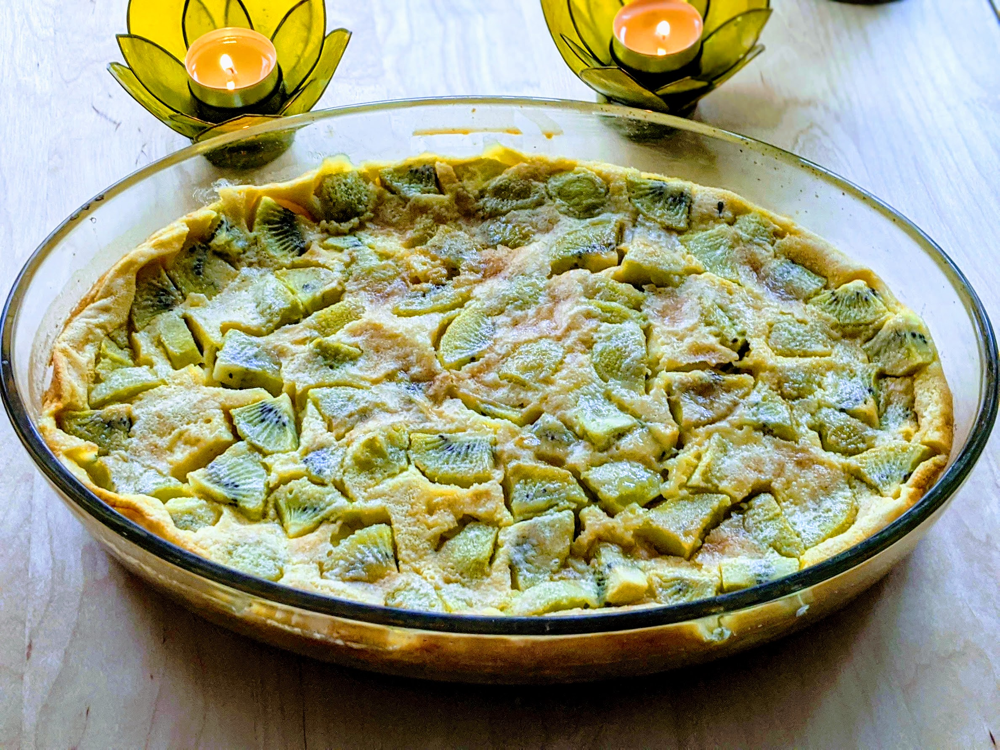

Clafoutis aux kiwis

Pour 6 personnes :
- 8-9 kiwis
- 150g de farine
- 150g de sucre
- 4 œufs
- Un demi-litre de lait
- Un sachet de sucre vanillé
- 2-3 cuillères à soupe de kirsch ou de rhum
- 50g de beurre
- Sel
- Préchauffer le four à 180°C (thermostat 6). Beurrer et fariner un moule.
- Peler 5 kiwis, les couper en petits bouts (un douzième de kiwi par bout, c'est bien) et les mettre dans le moule.
- Dans un saladier, mettre la farine, 100g de sucre, une pincée de sel. Faire fondre du beurre, ajouter dans le saladier les œufs battus en omelette et le beurre fondu.
- Rajouter progressivement le lait et le kirsch en mélangeant bien avec un fouet.
- Une fois que la pâte est bien lisse, la verser dans le moule sur les bouts de kiwis, et saupoudrer du reste de sucre par-dessus.
- Mettre au four entre 25 et 45 minutes en fonction de l'épaisseur (à vue de pif, quand ça commence à prendre une jolie couleur au-dessus et que ça a pas l'air trop liquide quand tu secoues le bidule, c'est que c'est bien)
- Peler et mixer le reste des kiwis avec le sucre vanillé, mettre le coulis au frigo.
- Servir le clafoutis tiède avec le coulis bien frais par-dessus.
Retour à la liste des recettes